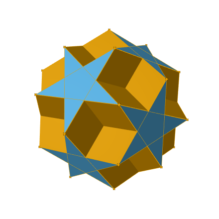

Research
My research combines geometric and computational approaches to problems in mathematical physics and algebraic geometry. I study monopoles, integrable systems, and the symmetries of Riemann surfaces. My work also includes causal inference and computational methods in cancer research.
Research themes
Monopoles and other Topological Solitons
I study Euclidean and hyperbolic monopoles using geometry, integrable systems, and twistor constructions. My aim is to connect these perspectives to the construction of explicit solutions, particularly those with symmetry. I am also interested in monopole moduli spaces and their geometric structures.
Interactive 3D visualisation of a V4-invariant charge-3 monopole
My broader interests in topological solitons include instantons, skyrmions, and vortices.
Integrability of Classical Hamiltonian Systems
Which Hamiltonian systems are integrable, and what explains their integrability? I am developing computational techniques to identify signs of integrability, with the aim of guiding the construction of the commuting conserved quantities needed for a proof. I also study which manifolds have integrable geodesic flows and how spectral curves help us understand systems with a Lax pair.
Cancer Research
My published work includes Mendelian randomisation studies of cancer risk factors and analysis of the algorithms underlying capture Hi-C methods. My broader interests include using machine learning and topological data analysis to investigate structure in cancer data.
Computational Algebraic Geometry
I develop and use computational methods to study Riemann surfaces, their symmetries, and their role in integrable systems. My work includes an implementation of the Abel–Jacobi map in SageMath and research on orbits of theta characteristics. I also explore machine learning as a tool for investigating algebro-geometric behaviour. Alongside SageMath, I use GAP, Macaulay2, Maple, and Python.

A dodecadodecahedron, related to the geometry of Bring's curve
Publications and preprints
Disney-Hogg and Zuev. Deep Learning of Topological Equivalence Classes.
Disney-Hogg. The Parity of Invariant Characteristics.
Broughton and Disney-Hogg. Explicit Homology Representation for Finite Groups Acting on Riemann Surfaces.
Halcrow, Disney-Hogg, and Chaudhuri. Skyrmions3D: A Julia package to create and visualise 3D Skyrmions in the Skyrme model.
Cork and Disney-Hogg. Locations of JNR skyrmions.
Braden and Disney-Hogg. Dihedrally Symmetric Monopoles and Affine Toda Equations.
Braden and Disney-Hogg. Orbits of Theta Characteristics.
Disney-Hogg. Symmetries of Riemann Surfaces and Magnetic Monopoles (Thesis).
Braden and Disney-Hogg. Towards a Classification of Charge-3 Monopoles with Symmetry.
Braden and Disney-Hogg. Bring's Curve: Old and New.
Bruin, Disney-Hogg, and Gao. Rigorous numerical integration of algebraic functions.
Disney-Hogg, Beckett, and Deutsch. An English translation of A. Wiman's "On the algebraic curves of genus p=4, 5 and 6, which possess unambiguous transformations into themselves."
Disney-Hogg et al. Impact of atopy on risk of glioma: a Mendelian randomisation study.
Disney-Hogg et al. Influence of obesity-related risk factors in the aetiology of glioma.
Takahashi et al. Mendelian randomization provides support for obesity as a risk factor for meningioma.
Disney-Hogg et al. Algorithmic considerations when analysing capture Hi-C data.
Talks
Mathematics and AI, at Monopole Moduli, ICTS, 2026.
Automorphisms of Riemann Surfaces and Theta Characteristics, at Foundations of Computational Mathematics Computational Algebraic Geometry workshop, 2026.
Introduction to Graph Theory, at I-X Graph Neural Networks seminars, 2026.
Symmetry, integrability and computation of hyperbolic monopole curves, at Modern Musings on Monopoles, Simons Centre for Geometry and Physics, 2025.
Locations of JNR skyrmions, at Solitons at Work (S@W), 2025, and Geometry and Analysis Seminar Series, University of Leeds, 2025, and Geometry and Mathematical Physics Seminar, University of York, 2025.
Monopole spectral curves: integrability and computation, at Recent Advances in Classical and Quantum Integrability, CaLISTA workshop, 2025.
Orbits of Theta Characteristics, at AMS Special Session on Automorphisms of Riemann Surfaces and Related Topics, Spring Central Meeting, 2024.
Symmetries of Riemann Surfaces and the Construction of Monopoles, at Geometry/Topology Seminar, University of Illinois Chicago, 2024, and Yorkshire Durham Geometry Day, 2024.
Integrability of Monopoles, at Integrable Systems Seminar Series, University of Leeds, 2024.
Symmetries of Monopole Spectral Curves, at SIAM Minisymposium on Algebraic Curves, Integrable Systems, and Computer Algebra, SIAM AG23, 2023, and 67th North British Mathematical Physics Seminar, 2023, and International Seminar-Type Online Workshop on Topological Solitons, 2023.
Bring's Curve and Theta Characteristics, at AMS Special Session on Applications of Riemann Surfaces, JMM, 2023.
Dijkgraaf-Witten Theory as a TFT, at GRIFT seminar series, 2022.
Theta characteristics, Spin Structures, and their Orbits, at Hodge Club Seminar Series, 2022.
The Construction of Monopoles, at STAMP seminar series, 2022.
Riemann Surfaces and the Abel-Jacobi map, at Sage Days 112, 2022.
Riemann Surfaces and Invariant Spin Structures, at Edinburgh Mathematical Physics Group Seminars, 2021.
Symplectic Integrators and Persistent Homology, at Edinburgh Mathematical Physics Group Seminars, 2020.
Integrability of the Swinging Atwood's Machine, at Cambridge University Part III seminar series, 2019, and Edinburgh Mathematical Physics Group Seminars, 2019.
Pioneering Women in Mathematics, at Mountford Humanities and Arts Communication presentations, 2019, and Cambridge University Part III seminar series, 2019.
The Proof of the Arnol'd-Liouville Theorem, at Cambridge University Part III seminar series, 2018.
Research activities
I co-organised the conference Geometric Models of Matter with Derek Harland, Steffen Krusch, and Tom Winyard.
I co-founded the STAMP seminar series with Andrew Beckett, and the MaPLe seminar series with Anup Anand Singh.
I co-organised the workshop Integrability and Applied Algebraic Geometry with Harry Braden.
I write reviews for zbMATH and the AMS.
Research software
See my GitHub for the research software I have produced.